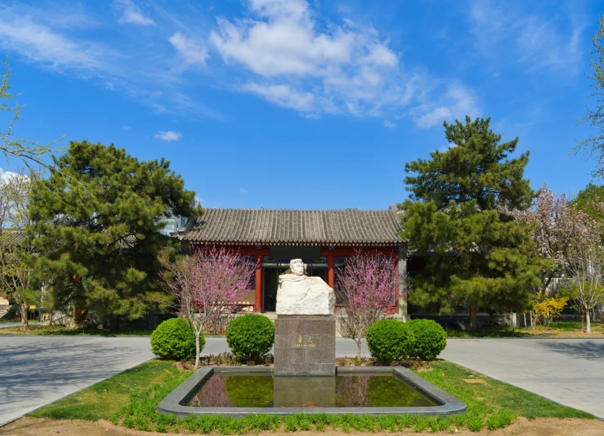
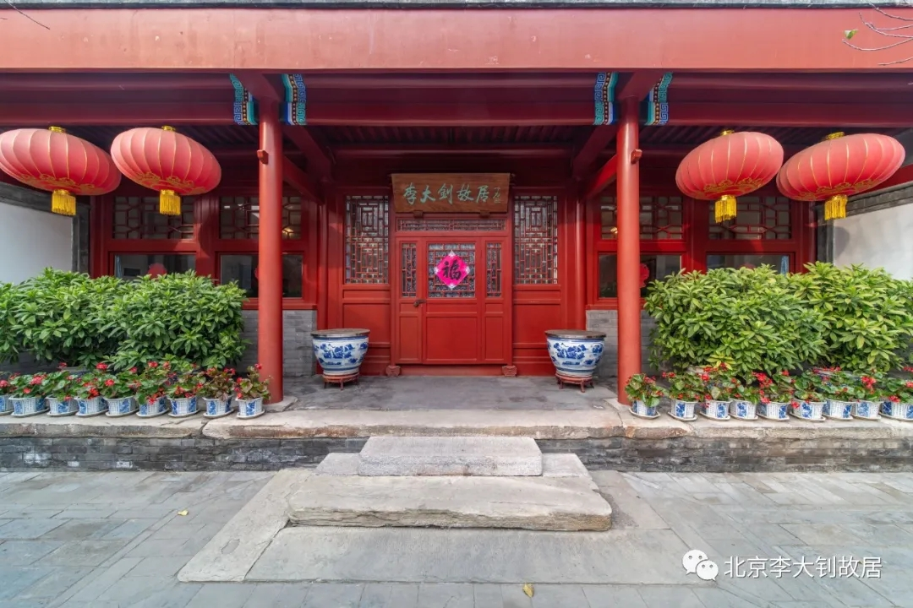
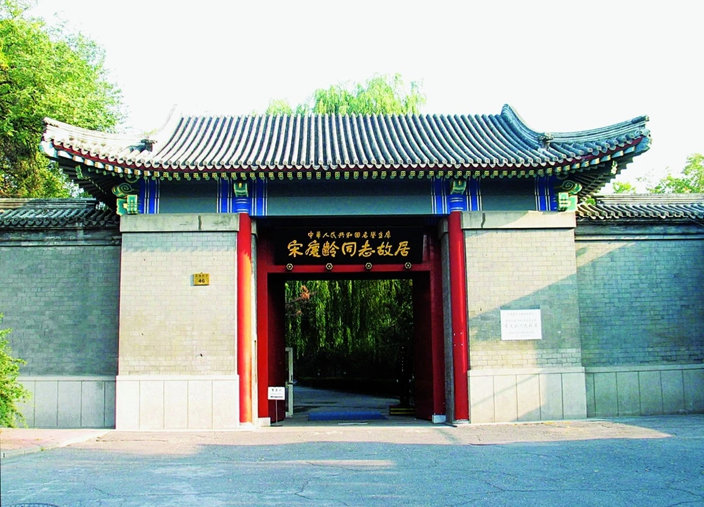
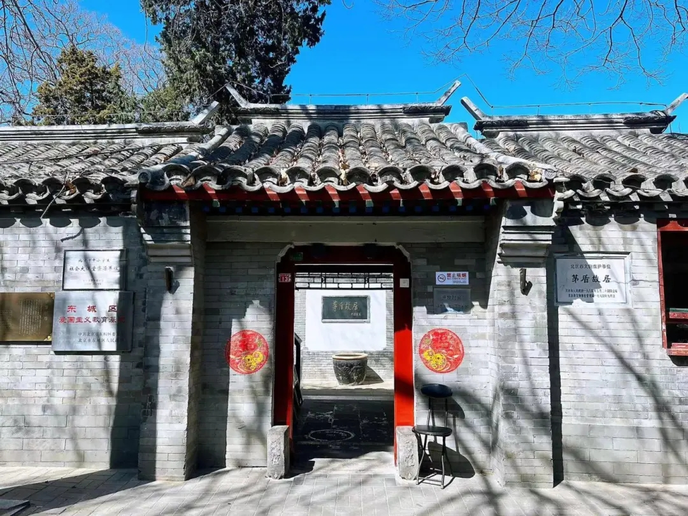
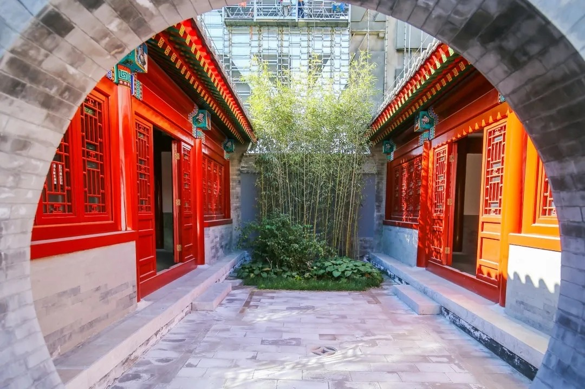

郭沫若纪念馆
位于北京市东城区，是纪念中国著名作家、历史学家、考古学家郭沫若的场所。
北京鲁迅博物馆
位于北京市西城区，是为纪念中国现代文学家鲁迅而建立的纪念性博物馆。
北京李大钊故居
位于北京市西城区，是中国共产党创始人之一李大钊生前居住过的地方。
宋庆龄故居
位于北京市西城区，是中国伟大的爱国主义者、政治家宋庆龄生前居住的地方。
茅盾故居
位于北京市东城区，是中国著名作家、文学评论家茅盾生前居住的地方。
曹雪芹故居纪念馆
位于北京市西城区，是纪念《红楼梦》作者曹雪芹的场所，展示了其生平和文学成就。